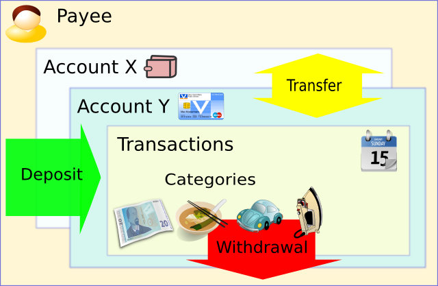

Money Manager Ex (MMEX) is a free/libre, open-source, cross-platform, easy-to-use personal finance software. It helps organize finances and track cash flow.
MMEX includes all the basic features that 90% of users would want to see in a personal finance application. The design goals are to concentrate on simplicity and user-friendliness – an application that can be used everyday.
MMEX is financial management system for anyone to track money, currency, capital assets, spending habits. MMEX is based on simple principles, to allow anyone with little, to no knowledge of finance and general bookkeeping to successfully manage their finances. MMEX does this by modeling the real financial world, to help the user maintain personal finances. MMEX is gratis (without payment or charge) and open-source software.
The primary goal of MMEX is to simplify the process of tracking financial information, in an easy to use program that can be used as regularly as necessary, to help track where money comes from and more importantly, where money goes, in order to make better informed financial decisions.
MMEX could be thought of as a computer checkbook which enables the balancing of accounts and to organize, manage and generate reports for finances.
MMEX also helps keep abreast of financial worth.
The purpose of this manual is to give the reader some basic instructions for using MMEX. This instruction manual will evolve as the program evolves. So check the help system with each update and see what’s new and how to better utilize MMEX.
Becoming organized financially requires some amount of discipline. Financial management can become complicated when there is no clear understanding of how much money we are getting, regarded as income as opposed to our expenses which is how much money we spend.
Debt usually results when our cash flow is restricted because our expenses exceed our income. Then we need to borrow money to maintain our cash flow to enable us to purchase our necessary items.
The first step towards better Financial Health, is to maintain good financial records. It is only when we have a clear understanding of where our money goes, that we can make an informed decision of where to cut back on our expenses when our cash flow becomes tight. If we do need to borrow money, we can then better manage our debts as well.
Did you realize you spent $600 in buying DVD movies last year? How many times did you watch them? Do you think now that the $600 would have been better spent on the unexpected maintenance on the auto that came up yesterday? Of course there is no right or wrong answer to how you should spend your money. After all, it is you who earned that money and the right to spend it whichever way you see fit. But you can always make your money work harder for you.
Here’s where personal finance software comes in. They help you slice/dice the financial data to give you better insight into what is going on. Always remember the software can only be as good as the data it has to process. Garbage In Garbage Out. But if you have started thinking of even using Personal finance software, you are well on your way to making every dollar count.
Read on how to work with MMEX.
MMEX models the real world to help us maintain our personal finances.
Generally we receive money from someone for a service we provide, or a product that we sell. This is regarded as a Income or as a Deposit to our system. When we purchase an item or use a service, the money that we spend is regarded as an expense or Withdrawal to our system. In MMEX, the people that give us money or receive our money are regarded as the Payees of the system.
As we hopefully do not spend all the money we receive, we would obviously need a place to keep our money. This is generally, some financial institution, or several institutions or in our pocket. MMEX tags these places as Accounts.
When we spend or receive money, we see this as a transaction, and the reason for our income or expense is our category. There will be times where we need to transfer money from one place to another, such as a withdrawal from an ATM, and this type of transaction is known as a transfer.
This can be simplified as shown in the following diagram:
One other important thing to consider is the currency we use to perform the transactions.
With all of these things to keep track of, MMEX uses a database to store and connect all these entities together.
The database that MMEX generates, known as the .mmb file,
becomes an important file for you to maintain. Depending on
circumstances, security features such as encryption can be
employed, which is recognized as a . This is where we can
attach a password to the database, and will require a password
every time MMEX is opened.
.emb file
As with any computer system, the data we produce is important to us, and therefore need to safeguard against system malfunction. MMEX has a backup system where it can produce a dated copy when the database is opened, and/or produce a dated copy of the database when changes have been detected. Up to 4 backups are maintained for each database when the system is initialized and/or when system changes have been detected, and the system shuts down.
.mmb or .emb database file regularly..mmb or .emb database file before doing so.
When MMEX initially starts up, it will attempt to load the last database that was opened. If no database existed, the user is presented with the option to either open an existing database, or create a new one.
If you need to create a new database file, from the Menu, select File → New Database….
This will prompt you to specify a new name for your .mmb
database file, at the location you specify. Your new database file
is now created and the New Database Wizard will be displayed to
help you initialize the new database and assist in creating your
first account.
The New Database Wizard will request you to set the Base Currency and a User Name.
MMEX comes with a default set of currencies which you can use, to correspond to your countries currency settings. New accounts will then use this Base Currency setting as the default. This allows accounts from different countries to reflect the value in the base currency.
To help identify the purpose of the database, a User Name is requested. This is optional, as it is only used as a title on the Dashboard, and in reports.
Both these settings can later be changed if required by selecting the menu: Tools → Settings….
The database name will be displayed on the title bar which helps
remind you which database file is open.
The new
.mmb database file is not encrypted.
When creating a new database file, you will automatically be requested to create a new account.
To manually create a new account, from the Menu, Select Accounts → New Account….
This will bring up the Add Account Wizard. The wizard will assist in collecting the important information of the Name and Type of Account. The Type of Account is not changeable, but the name can changed when editing account information.
Name of the Account: This is a required field. The
recommendation is to name your accounts uniquely and in relation to
real world accounts. Example: With CitiBank, we have a Savings
account and a credit card Visa account. You could name your
accounts as CitiBank Savings
and Citibank Visa
.
Type of Account: MMEX supports several types of accounts.
To properly setup accounts, you should have balance information for the accounts you want to add to MMEX. You can get this information from your most recent bank, investment and credit card statements. To track additional information about this account, optionally you can enter your account details such as Account Number, Held At, Website, Contact info and Access Info. You can enter additional notes about the account in the notes field.
Most accounts have some kind of balance in them, for example say in a credit card account, you have a current balance of $2,304.67, you could put that value in the initial balance field. Going forward you only need to add transactions beyond that date when you had the balance.
The Account Status can be set to Open or Closed. Closed accounts are just that. They are no longer active. Setting this status is just a way to de-clutter your view in the Navigator. Permanent settings are made by changing the View on the Menu, Tools → Settings…, you can hide the closed accounts. See Navigator Tips.
Currency: This is initially set to the database Base Currency setting which was initially set when creating the database. You can set the currency that is associated with this account and can be different to the base currency.
The exchange rate for the currency can be changed using the menu: Tools → Currency Manager….
Example: You live in the USA using US Dollars, and have an
Italian bank account using the Euro. Most of your accounts are in
USD. What is the real value of your Italian bank account? By
changing the exchange rate for the Italian Euro, you can get the
correct value of your accounts.
You also can mark accounts as a Favorite Account. This again is used to change the accounts that are visible in the Navigator. See Navigator Tips.
We have a savings account with $1,250, a check account with $500, a MasterCard owing $250, a Visa Card owing $475, a home mortgage loan of $230,965 and an education fund to send the children to college in the future currently at $5,000 earning interest.
We would set up the following accounts:
| Account Type | Account Name | Initial Balance |
|---|---|---|
| Check/Savings | Savings | $1,250.00 |
| Check | $500.00 | |
| MasterCard | -$250.00 | |
| Visa Card | -$475.00 | |
| Term | Home Mortgage | -$230,965.00 |
| Education Fund | $5,000.00 |
On the Dashboard the balances would be $1,025 for Bank accounts, and $-225,965 for Term Accounts
When a payment is made from your Savings Account to your MasterCard with a Transfer Transaction the balance on the Dashboard remains the same. When a payment is made from your savings to your home mortgage, the balance on the Dashboard will reflect the payment. Now you can determine the amount of money you have on a day to day basis. Regular payments can also be set up from your savings account to your mortgage account using Scheduled Transactions.
Once you have created an account, you can edit any of the account information fields in the following ways:
This will bring up the account information dialog where the required fields can be changed.
Edit the account details then use the OK button to save the account information.
Once you have created a new account, and selected the required account from the Navigator, or the Dashboard, the displayed account can have new transactions added as follows:
A dialog will appear for new transactions. Use this dialog to enter the following details:
Editing existing transactions can be achieved in a number of ways:
Any of these actions will open the transaction dialog box containing the details of the selected transaction. Make the changes and click OK to save the changes.
Transactions can be filtered by either fixed filters or, by using the Transaction Filter in the Account View. This will allow the user to limit the visible transactions to those defined by the appropriate filter. These filtered transactions can then be easily selected and individually modified.
These visible transactions can also be deleted in bulk if so desired.
In MMEX, reconciled and unreconciled transactions are shown by different icons. When bank details are not checked against a bank statement, the user can select to set the default as Reconciled when creating transactions in the Settings.
Some transactions might have some issues that you want to follow up on. Mark these as with status of flag for followup. This is indicated in MMEX with a different icon.
The user can specify 7 custom colors in under the Transaction Colors heading in the View section of the Settings. In the checking/term panel, pressing Ctrl+1 through Ctrl+7 sets the transaction entry color to the user specified custom color. Pressing Ctrl+0 will change it back to the MMEX default transaction color.
The MMEX provides several utilities to help users find specific transactions. The Notes field of transactions can be searched from the account view. At the bottom of the transaction listing in the account view, input your search query in the text box to the right of the magnifying glass. Click the magnifying glass or press the Enter key to search the transactions in that account. The search is case sensitive.
In order to find particular payees, open Payee Manager using the menu item: Tools → Payee Manager….
In the payee management window, use the search field at the bottom to type your query. The search is not case-sensitive, and as you type the payee list will be filtered with any matches.
If you do not know the exact name or spelling of a payee, you can use the ? (question mark) wildcard as a substitute for a single character, or the * (asterisk) wildcard as a substitute for one or more characters.
Payees are the people or institutions that give us money, or the people or institutions who we pay, for our goods and services.
You can manage Payees by using the menu item: Tools → Payee Manager….
Once the Payee Manager opens you can add new payees, edit or delete existing payees.
To Add a new Payee:
You can also select the payee in the list, then use the Edit or Delete button to perform the required action.
To delete a payee, ensure that no transactions use this payee. This can be done by:
This would then make the payee free so it can then be deleted.
Categories indicate the reason an expenditure is made or an income is received.
A Category is generally used to record Income or Expenses. Because MMEX allows us to transfer money between accounts, it is also recommended to use categories to record transfers. This will allow us to determine what money is being transferred for a specific reason, such as a repayment to a loan. This will not be seen as an income or expense in the overall picture. Using the same category for an income and an expense will upset balance figures.
Example: If we want to record the the value of running a car, we would set up the following:
The first 4 subcategories are used to record expenses. If we are reimbursed for fuel costs for any reason, we would need to use Fuel Reimbursed as an Income subcategory. This would then allow us to determine the correct amount we are spending on fuel to run the car. This will become clearer when we are using Budgets.
When adding a new transaction, we can use more that one category to record a transaction. This is known as a split category.
The overall split category transaction is either a withdrawal or a deposit. Although the categories within the split, need to reflect the overall transaction type, each category can be classified as a withdrawal or deposit within the split.
Split categories can easily be viewed for a transaction by using a contextual menu selection when a split category entry exists.
You can manage Categories by using the menu item: Tools → Category Manager…. Once the category dialog opens, you can add new categories and subcategories.
To Add a new Category:
To Add a new Subcategory:
You can also change the names by selecting the category/subcategory in the list, modify the name in the text box, then use the Edit button. Use a similar action to delete the category/subcategory in the list.
Ensure that no transactions use this category/subcategory combination. This can be done by:
This would then make the category free so it can then be deleted.
You can nest subcategories, with information available here: nested categories #1477.
TODO, some information is available here: Addition of "classes" or "tags" #5439.
To update information about Tags, update https://github.com/moneymanagerex/moneymanagerex/blob/master/docs/en_US/index.html.
MMEX can be used in many countries, MMEX need to consider the currency for the country of use. When creating a new database, the Base Currency is set to the currency used in the user’s country. If the user’s currency setting is not listed in the default currencies, the user can create their own currency Listing.
MMEX allows us to work with more than one currency. Each account has its own currency setting, and will default to the base currency. When we set accounts with different currencies, the transactions we create in these accounts will reflect the currency of the account.
You can manage Currencies by using the menu item: Tools → Currency Manager….
Add a new Currency:
When more than one currency is being used, the Conversion to
Base Rate needs to be set. This will allow the value of the
currency to properly reflect the value at the base rate.
To allow Automatic Currency update, the Currency Symbol needs
to be set for the particular currency being used.
To alleviate the problem of users having to pre-format their bank transaction CSV files into the fixed format MMEX requires, MMEX also allows users to import CSV files where the order of fields is completely freeform.
To use this importer, select the account you want to import into and then select the order of fields in the CSV file by picking and choosing from the list of possible fields. MMEX will now import the CSV file using the format information specified by the user.
MMEX can import from a wide
variety of formats. One of them is a fixed format CSV file. This
file format exactly matches the CSV format that MMEX can export. So
it can be useful to move data from one .mmb database file to
another .mmb database file. To easily see the format of the CSV
file, you can try exporting an account to a CSV file and then
analyzing the format created.
The CSV field options are as follows:
When creating your CSV file be sure that you remove the commas from your deposits and withdrawals. This can be done easily using a spreadsheet program such as LibreOffice Calc.
After importing from QIF, all transactions will have a Follow Flag as it its status. You can mark all transactions with this flag using the bulk status setting commands using the right-click contextual menu in the account view.
Importing from XML files recognizes XML files in Excel format
named XML Spreadsheet 2003
in Excel. This is the recommended
import method if required to import transactions from Excel.
Method of import and field selection is same as importing from CSV files.
Quicken Interchange Format (QIF) is an open specification for reading and writing financial data to media (i.e. files). A QIF file typically has the following structure:
!Type:type identifier string [single character line code]Literal String Data ... ^ [single character line code]Literal String Data ... ^
Each record ends with a ^ (caret).
See example QIF transaction:
!Type:Bank Header
D6/ 1/94 Date
T-1,000.00 Amount
N1005 number
PBank Of Mortgage Payee
^ End of transaction
QIF is older than Open Financial Exchange (OFX). The inability to reconcile imported transactions against the current account information is one of the primary shortcomings of QIF. It is commonly supported by financial institutions to supply downloadable information to account holders.
MMEX can import transactions from specific types of QIF formats into an account (you can find the type of QIF by opening in a text editor)
After importing from QIF files, all transactions will have a Follow Flag as it its status. You can mark all transactions with this flag using the bulk status setting commands using the right-click contextual menu in the account view.
MMEX has a light WebApp that can be installed on every PHP webserver like NAS, shared hosting or other PHP local installation.
You can download all needed files from WebApp project page.
To start-up WebApp you only have to:
htaccess.txt in .htaccess (on Windows you need to do
it from CMD and rename command)
PDO_SQLite if neededThen simply open your browser to the folder URL, fill first settings and insert correct URL and GUID in MMEX settings (import/export tab).
Now at every start-up MMEX will contact WebApp for new transaction that will be downloaded and imported in desktop database.
All main transaction linked settings will be automatically synced to WebApp, in this way you can have all your account and payees ready to use inserting new transaction.
MMEX can export as a fixed format CSV file. This file format
exactly matches the CSV format that MMEX can import. So it can be
useful to move data from one .mmb database file to another .mmb
database file. To easily see the format of the CSV file, you can
try exporting an account to a CSV file and then analyzing the
format created.
The general format is as follows:
MMEX can export as an XML file. The XML format is compliant with, and can be read by, spreadsheet programs such as LibreOffice Calc. The general format is the same as CSV.
MMEX can export an account to a file of the QIF format. This format can also be used by MMEX to reload into an account.
Scheduled Transactions are special transactions that we set up in order to have the transaction entered into the database at some future date. These transactions generally occur at regular intervals, such as the payment of a bill.
These transactions:
Scheduled Transactions can be accessed from the Navigator or from the menu item Tools → Scheduled Transactions. This will display the Scheduled Transactions page.
To create a new transaction, use the New button:
To create a scheduled transaction from an existing transaction, select and right-click on the transaction to bring up the contextual menu and select Create Scheduled Transaction….
MMEX allows you to track Stocks and Shares. The total Stocks are added to your total financial worth.
Further details refer to Stocks, Shares and Share Dividend Management in MMEX
MMEX allows you to track fixed assets like cars, houses, land and others. Each asset can have its value appreciate by a certain rate per year, depreciate by a certain rate per year, or not change in value.
The total assets are added to your total financial worth.
Assets are accessed via the Tools →
Assets or via the Navigator.
Assets are created in the Asset Management window.
Asset transactions are added to an asset and tied to an account.
MMEX allows a variety of reports. Select the appropriate report under the Reports node in the Navigator. Some reports require some user input, some do not.
These reports are generally used for tax purposes which do not necessarily start at the beginning of the calendar year. These reports cover:
The start date can be changed by the user to start on any day of any month, within a 12 month period by using the menu Tools → Settings… → General.
This allows the user to generate specific reports based on user selected criteria.
A Transaction Report is generally used to locate specific transactions made within Bank or Term type accounts. This report can also be used to display specific details for a particular account.
For a Transaction Report, the resulting list of transactions can be printed or saved as a HTML file.
Since a transfer transaction is a withdrawal from one account and a deposit to another account, a transaction report done on multiple accounts loses the reference point for determining whether the transaction is a deposit or withdrawal.
When a transaction report is used for a specific account, it will generate a report that will match the account details. The reference point for transfers in known for this report, which will reflect in the report having correct balances displayed.
This report projects the amount of funds available, based on future commitments.
The report will use the Scheduled Transactions for the various accounts, and reflect forward 10 years on a monthly basis. This becomes a prediction of the amount of money that may be available each month based on current payments.
MMEX supports printing of all reports that can be viewed.
Once you view a report, you can print the report using the File → Print… menu.
You can modify some runtime behavior of MMEX by changing the options in the Settings.
Access from the menu with Tools → Settings….
You can contribute by:
MMEX was originally developed as a personal finance software called Money Manager. It was written in .NET and was more of a learning exercise than serious software development. It grew far beyond the original design. The software was frozen and work began on a new version which had a similar user interface and features, but written in C++.
Usually Microsoft names their second version of their improved
software APIs with an Ex extension as in doSomething() and
doSomethingEx(). This convention was followed so an ‘Ex’
was appended.
.mmb format proprietary?No, .mmb file is not proprietary.
MMEX uses SQLite databases to store user data. That
means that the .mmb file is a regular SQLite database.
SQLite is one of the smallest, free relational database
systems around and there are tons of tools to open and
access SQLite databases. SQLiteSpy,
SQLite Browser
, and wxSQLitePlus
are such utilities. Once you open the database using these tools,
you can do anything you want with the data.
Yes. Your data is completely safe.
The data is self contained on your PC, (or USB stick if you have made it portable). To further protect your data, encryption can now be added. This applies a password to your database file, and can only be opened by MMEX or any other software if you have the correct password.
Yes.
MMEX is a portable application which means ability to run
without installation, for example, from USB flash drive. If MMEX
finds mmexini.db3 in its folder, it assumes portable
mode. Copy MMEX’s files to USB Key and copy yours
mmexini.db3 to MMEX’s folder on that drive.
To make MMEX portable:
F:\ is USB flash drive)
C:\Program Files\MoneyManagerEx to
F:\%APPDATA%\MoneyManagerEx\mmexini.db3 to
F:\MoneyManagerExF:\/media/disk is mounted USB flash drive)
make install prefix=/media/disk cp ~/.mmex/mmexini.db3 /media/disk/mmex/share/mmex
/usr:
cp /usr/bin/mmex /media/disk/mmex/bin cp /usr/share/mmex /media/disk/mmex/share cp /usr/share/doc/mmex /media/disk/mmex/share/doc cp ~/.mmex/mmexini.db3 /media/disk/mmex/share/mmex
Generally, with any closed-source program, you have to depend upon the vendor’s word regarding safety of the data. But with MMEX being open-source, you can verify this claim yourself.
Even if you are not a C++ expert, you can rest assured that anyone can access the source code at any time and verify the legitimacy of MMEX’s intentions.
MMEX does connect to the internet only to send anonymous usage statistics or when checking for an update. Here is a sample of data that MMEX will send:
| Version | Operating System | Language | Country | Resolution | Start Time | End Time |
|---|---|---|---|---|---|---|
| 1.3.0 Portable | Windows 8 (build 9200), 64-bit edition | english | United States | 1366x768 | 2014-05-01 09:00:00 | 2014-05-01 09:01:30 |
To print a statement with transactions from any arbitrary set of criteria, use the Transaction Filter to select the transactions you want and then do a print from the File → Print… menu.
The Transaction Filter is accessed from Reports → Cash Flow → Transactions in the Navigator.